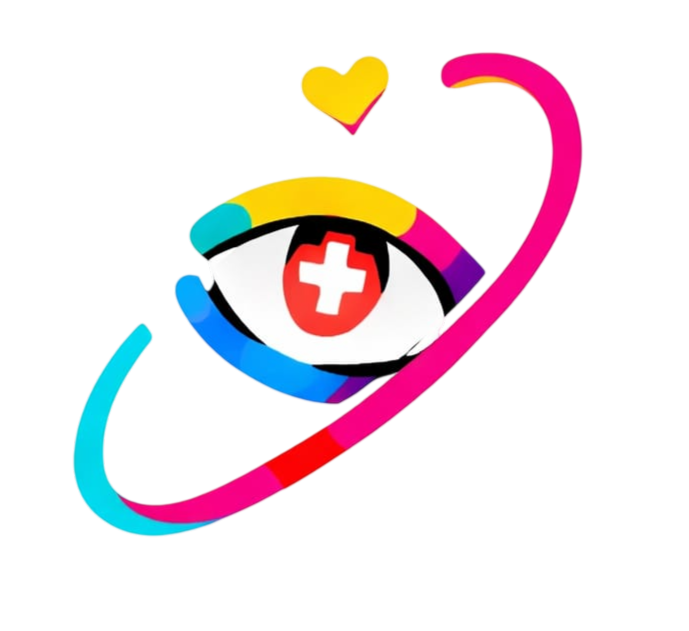

Link. Love. Listen.
Syarat & Ketentuan untuk Keluarga Pasien
Aplikasi iSeeYou digunakan oleh keluarga untuk terhubung dengan pasien yang sedang dirawat. Demi menjaga kenyamanan, keamanan, dan privasi seluruh pasien di rumah sakit, keluarga wajib mematuhi regulasi berikut selama menggunakan aplikasi ini:
1. Larangan Tangkapan Layar (Screenshot). Keluarga dilarang mengambil tangkapan layar dalam bentuk apa pun selama sesi video call, monitor kesehatan, EKG, maupun catatan suara berlangsung.
2. Larangan Merekam. Merekam layar, merekam suara, atau menyimpan ulang sesi konsultasi dan panggilan video di luar sistem iSeeYou tidak diperkenankan sesuai regulasi rumah sakit.
3. Tidak Menyebarluaskan Informasi. Kondisi medis, data vital, dan hasil pemantauan pasien yang ditampilkan hanya boleh dilihat oleh keluarga terverifikasi dan tidak untuk disebarluaskan ke pihak lain.
4. Jaminan Privasi Terjaga. Rumah sakit dan tim iSeeYou menjamin seluruh data — panggilan video, catatan suara, detak jantung, EKG, hingga suhu tubuh — terenkripsi dan hanya dapat diakses oleh keluarga yang berwenang serta tenaga medis yang menangani pasien.
5. Etika Selama Sesi Video. Keluarga dimohon menjaga sikap dan ucapan yang menenangkan selama video call berlangsung, mengingat sesi ini turut memengaruhi kondisi emosional pasien.
6. Keadaan Darurat. Aplikasi ini bukan jalur komunikasi darurat. Untuk kondisi kritis, segera hubungi perawat jaga atau pihak rumah sakit secara langsung.
iSeeYou
Link. Love. Listen.
Panggilan Video
Dr. Sari Dewi
Dokter Umum · Telemedisin
Status Vital Cepat
70 bpm
Detak Jantung
96%
SpO2
Catatan Suara
Ketuk untuk Rekaman
00:00
Rekaman Tersimpan
0 rekamanMonitor Kesehatan
77 bpm
Detak Jantung
Normal99%
SpO2
Optimal36.2°C
Suhu Kulit
Normal120/80
Tekanan Darah
NormalLive Pulse (PPG)
Ringkasan Kondisi
7 hari terakhirMonitor EKG
Ritme
Sinus Normal
70
bpm
96
QRS (ms)
160
PR Interval
400
QT Interval
Interpretasi Klinis Otomatis
Irama jantung teratur dan berada dalam rentang normal.
Tidak ditemukan tanda-tanda iskemia akut.
Interval QT berada dalam batas normal.
Kompleks QRS sempit, konduksi ventrikel normal.
Hasil ini merupakan pemantauan otomatis dan bukan pengganti diagnosis medis profesional. Konsultasikan dengan dokter untuk interpretasi klinis lengkap.